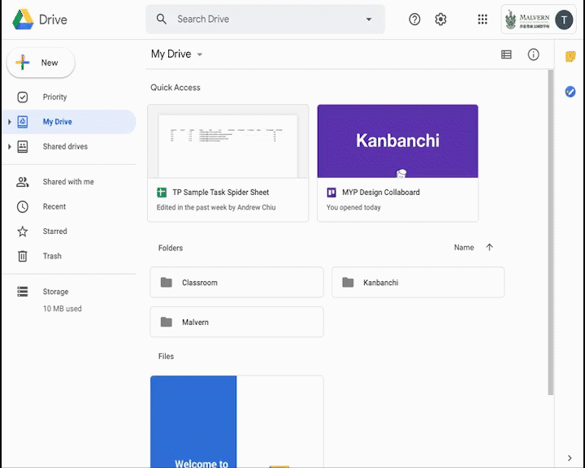
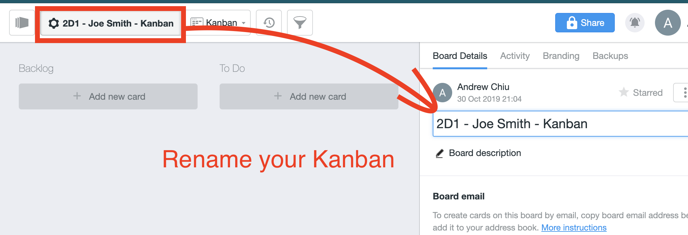
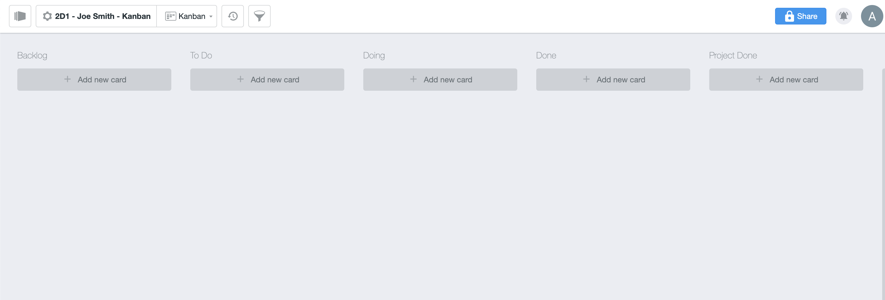
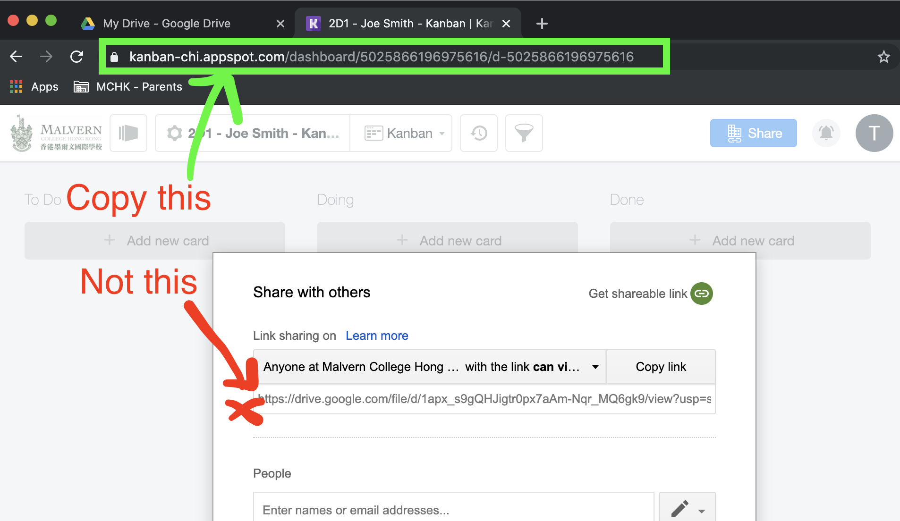
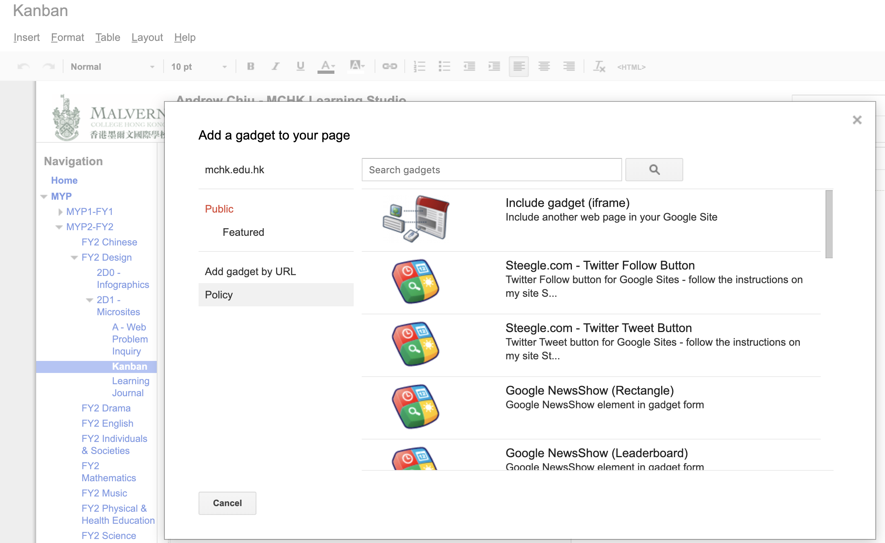
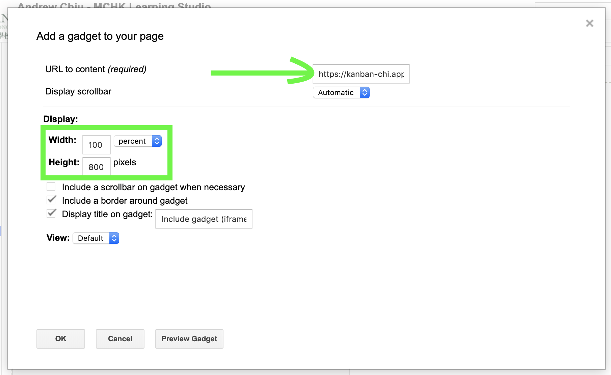
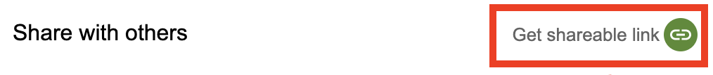

The Power of Microsites
FY2 MYP Design - MCHK
P0.2 - Create your Kanban
-
Step 1
What is a "Kanban"?
Watch the Intro to Kanban video.
After watching this video, answer these questions.
How many did you get right? Do you now know what Kanban is?
-
Step 2
Create your Kanban
We will create a Kanban in Google Drive, using an app called Kanbanchi.
Go into your Google Drive and create a Kanbanchi board now.

-
Step 3
Rename your Kanban
Make sure your rename your Kanban with the following name: "2D1 - [Your Name] - Kanban"
 -
Step 4
Setup your Kanban lists
Make lists so your Kanban looks like the following Kanban (Backlog, To Do, Doing, Done, Project Done)
 -
Step 5
Share your Kanban
On your Kanbanchi board, click the blue Share button.

-
Click on the "Get Shareable Link" (but do not click "copy link".
-
Now go to the URL Address at the top of your browser and copy the URL to your page. Note: you are copying the address of your Kanban page, not the sharing link in the share window)

-
On your Learning Studio site, create a page called "Kanban" under "2D1 - Microsites" page.
When editing your Kanban page on your Learning Studio, go to Insert --> More Gadgets... --> Public --> Include gadget (iframe)
-
Paste your Kanban shared link into the "URL to Content" box and adjust the width to 100 percent, height 800px, and click OK


You should now have your Kanban on your Learning Studio
-
Step 6
Setup your Kanban lists
Now start using your Kanban.
Add in all the things you need to do for your project as cards in the "Backlog".
Think about what you are going to start doing this lesson and drag that card to the "To Do" list.
Start doing!
- Return to Unit Overview